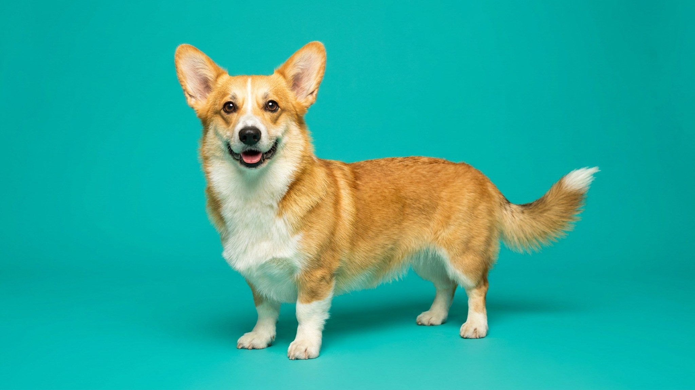

Корги и длинная спина: что важно знать хозяину

14 июня 2026 · 3 минуты чтения · Породы собак
Корги выглядит как маленький крепыш, но его пропорции — длинное тело на коротких лапах — создают реальную нагрузку на позвоночник. Лишний вес или ежедневные прыжки с дивана способны многократно эту нагрузку усилить. Хорошая новость: главные факторы риска полностью в руках хозяина.
🐾 Питомец ведёт себя странно?
AnimaLife расшифрует поведение кошки и собаки и подскажет, что делать. Попробуйте бесплатно прямо в мессенджере.
Открыть в Telegram → Открыть в MAX →
Почему строение корги требует внимания
Вельш-корги — хондродистрофичная порода: длинное туловище при укороченных конечностях. Такая конфигурация перераспределяет нагрузку вдоль позвоночного столба иначе, чем у собак стандартных пропорций. Это не приговор и не повод для паники — это повод для грамотного быта.
- Прыжки с высоких поверхностей (диван, кровать, ступени вниз) создают ударную нагрузку на межпозвоночные диски.
- Лишний вес — главный управляемый фактор. Каждый лишний килограмм для маленькой собаки — это пропорционально больше, чем кажется.
- Регулярная умеренная нагрузка полезна и нужна — корги активная порода, без движения она скучает и набирает вес.
Контроль веса: практические ориентиры
Нормальный вес вельш-корги пемброк: 10–14 кг для сук, 12–14 кг для кобелей. Кардиган чуть крупнее. Но важнее цифры — тест рёбер: рёбра должны легко прощупываться без давления, талия — быть заметна при взгляде сверху.
- Взвешивайте корги раз в месяц и записывайте результат.
- Нормы на пачке корма — стартовая точка. Корги легко переедают: порция часто меньше, чем указано производителем.
- Лакомства считаются в суточный рацион — их объём не должен превышать 10% от дневного количества еды.
- После стерилизации потребность в калориях снижается. Обсудите с ветеринаром, стоит ли скорректировать рацион.
Правила быта для здоровья позвоночника
Небольшие изменения в квартире снижают ежедневную ударную нагрузку на позвоночник корги.
- Пандус или ступеньки к дивану и кровати вместо прыжков — это работает и легко приучается с щенячьего возраста.
- Не разрешайте собаке прыгать вниз с высоты — для корги это привычка, которая накапливает нагрузку годами.
- Нагрузка по возрасту: щенку до года — без длительного бега и прыжков, взрослому — 45–60 минут активного движения в день, пожилому — короче и спокойнее, но ежедневно.
- Плавание и нюхательные игры — отличная нагрузка без ударного воздействия.
На что обращать внимание и когда к ветеринару
Корги умеют скрывать дискомфорт. Следите за изменениями в поведении, а не ждите явных признаков.
- Собака стала реже прыгать на диван или стала делать это с явным усилием.
- Изменилась походка: семенит, осторожничает на ступенях, тянет одну лапу.
- После активной прогулки корги долго не встаёт или скованно двигается.
- Любой из этих сигналов — повод показать питомца ветеринару, не искать объяснения в интернете.
🐾 Понравился разбор?
Подпишитесь на канал — каждый день разбираем по одному тревожному симптому у кошек и собак: что в пределах нормы, а когда пора к врачу. Подпишитесь, чтобы не пропустить разбор, который может спасти здоровье вашего питомца.
Материал носит информационный характер и не заменяет очную консультацию ветеринара.
← Все статьи · Открыть AnimaLife в Telegram · RSS